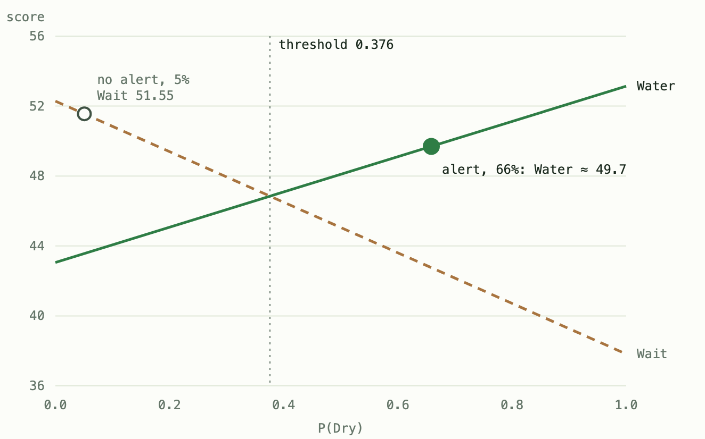
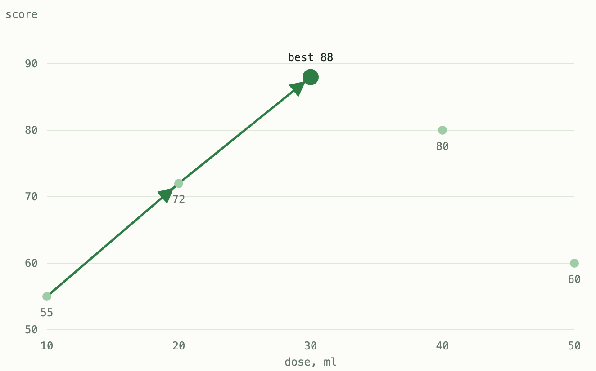
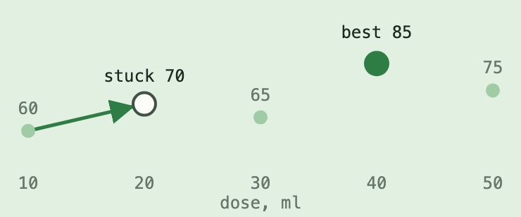

greenhouse
Mini Greenhouse Assistant
Cheap soil sensors are noisy, so we weigh the reading before we water.
Miras Yessenaly · AI Fundamentals · Final project
Noisy sensors lead to bad watering
A cheap sensor can be wrong in both directions.
Trust it blindly
False alarms lead to overwatering. Roots rot and water is wasted.
Ignore it
Real dryness gets missed. The plant dries out and suffers.
Objectives
1
Estimate how likely the soil is really dry
Bayesian inference
2
Decide to water now or wait
MDP, value iteration
3
Pick the best water dose
Hill climbing
All probabilities, rewards and scores are hypothetical assumptions.
One chain: belief, decision, dose
The output of each step is the input of the next.
input
Soil sensor
Gives a cheap, noisy reading.
alert
→
1
Bayes
Is the soil really dry?
P(Dry) = 66%
→
2
MDP
Water now or wait? Uses P(Dry) as the belief.
Water
→
3
Hill climbing
How much water is best?
30 ml
Water 30 ml now.
We are 66% sure the soil is dry, so watering pays off. With no alert we wait, and the best dose for later stays 30 ml.
Bayes: how much to trust the sensor
Before the reading 30%. After an alert 66%.
Before the reading (prior)
30%
After an alert
66%
After no alert
5%
The sensor says 'dry', but it sometimes lies. Bayes tells us how much to trust it.
P(alert) = 0.90·0.30 + 0.20·0.70
= 0.41
P(Dry|alert) = 0.27 / 0.41 = 0.6585
Sensor model: catches dry soil 90%, false alarm 20%.
MDP: water now or wait
Q values weighted by the belief from Bayes.

For each action we ask: what do I get now, plus what can I expect later? We pick the bigger number.
Policy
Dry → Water
Normal → Wait
Converged
148 iterations
Discount
γ = 0.9
Alert
Water ≈ 49.7
Wait ≈ 42.8
We water when we are more than 38% sure the soil is dry.
Hill climbing: how much water
Five candidate doses, one health score each.

Try a bit more or a bit less water. If the plant gets better, keep going that way. If it gets worse, stop.
10 → 20 → 30 ml · score 88 · 2 steps
Tricky plant: 60, 70, 65, 85, 75

From 10 ml it gets stuck at 20 ml (70). Restarting from all 5 doses finds 40 ml (85).
Results and next steps
Every number from the hand calculation is checked by a test.
tests passing
41
pytest -q
iterations to converge
148
value iteration
water threshold
38%
P(Dry) > 0.376
Experiments
Rare drought plus a noisy sensor can turn an alert into Wait (prior 0.1, false alarm 0.2: P(Dry) 0.33).
Normal table: every start reaches 30 ml. Tricky table: restarts always find 40 ml.
Next steps
Real sensors on Arduino or ESP32. Learn the probabilities from data. A full POMDP instead of weighing Q by the belief. Several plants.
Live demo
greenhouse-ai-blue.vercel.app
github.com/lordwateroff/greenhouse-ai